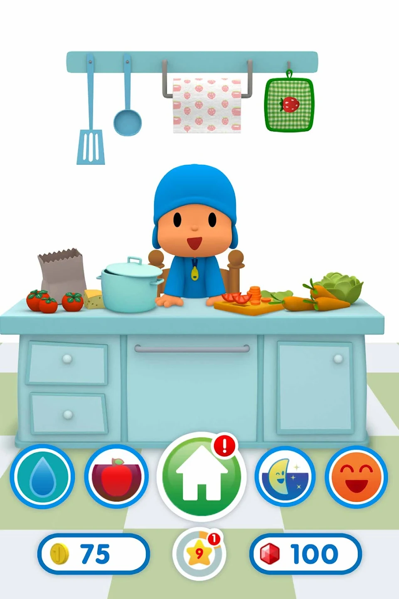
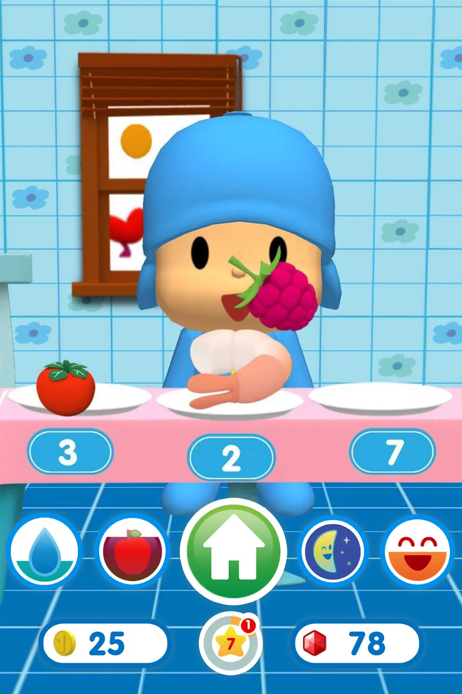
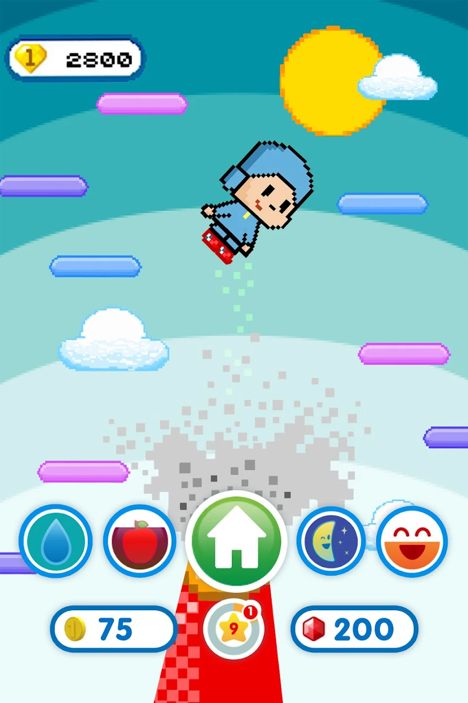
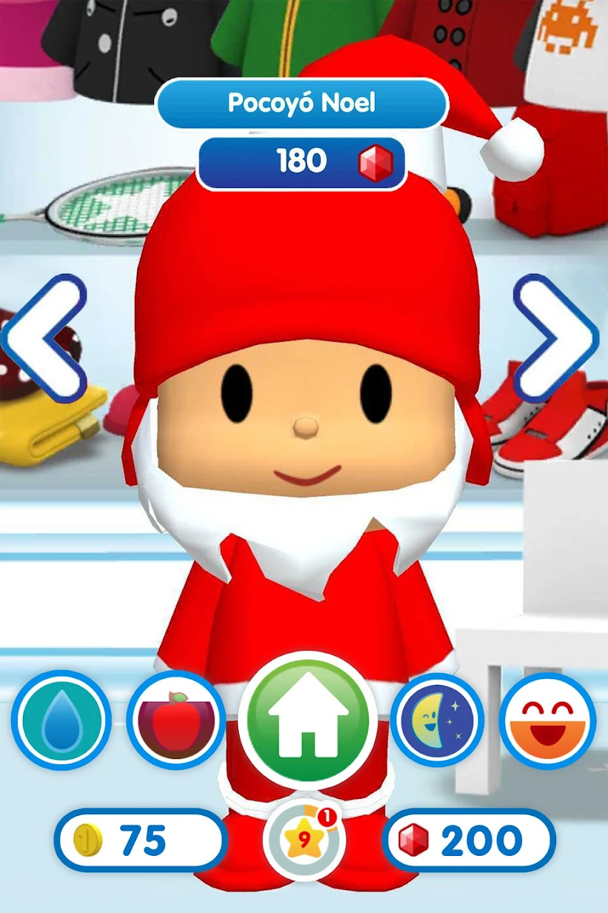
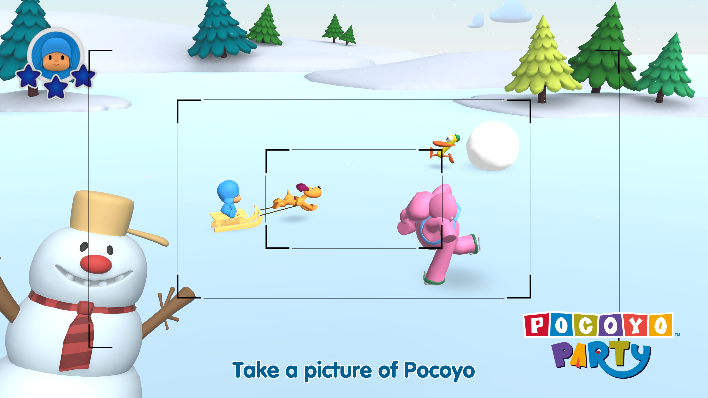
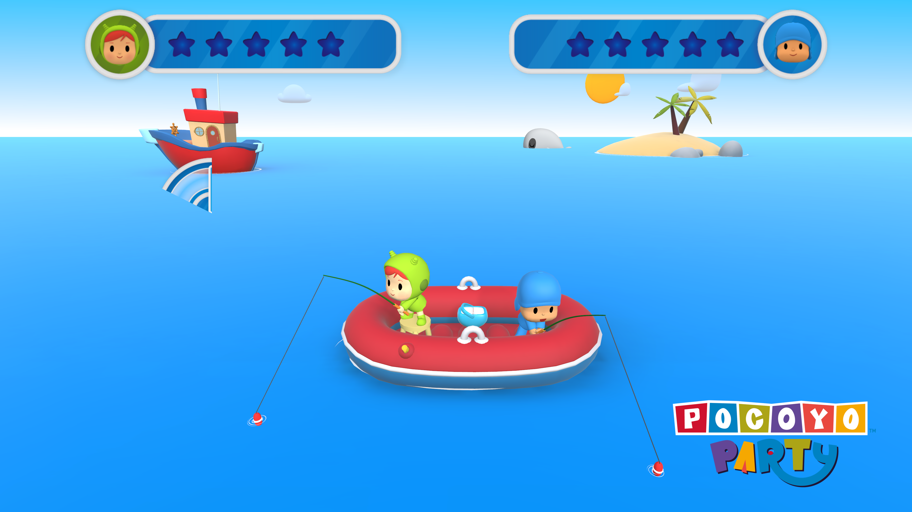
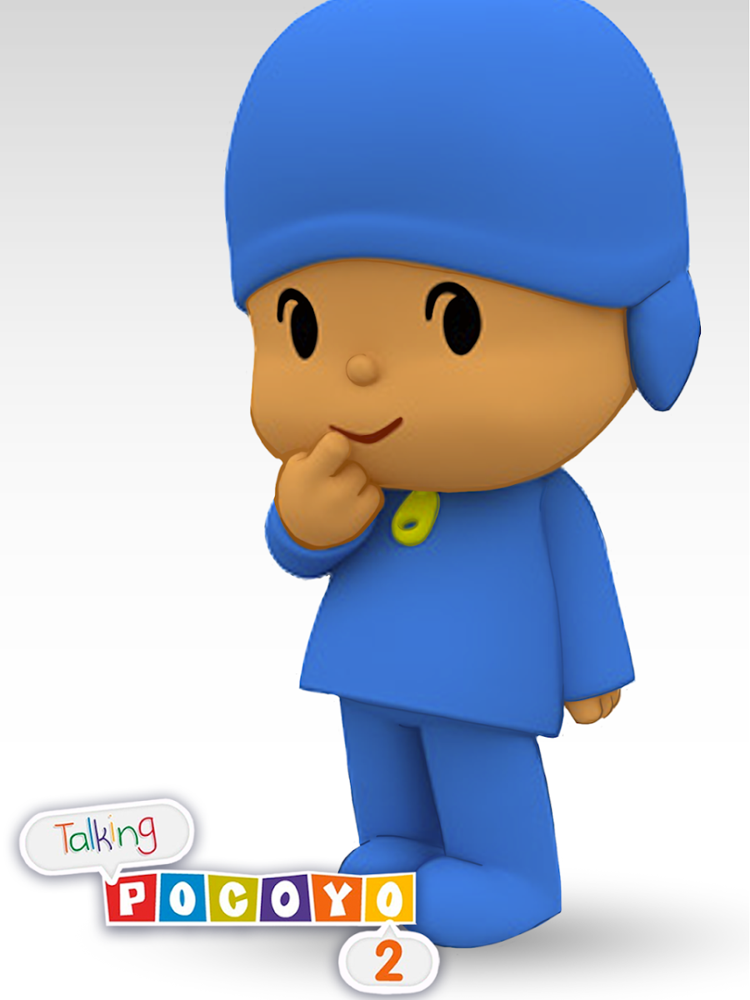

Identidad visual de franquicia
Los personajes tienen proporciones, materiales y expresiones canónicas. La implementación técnica tiene que servir al look artístico, no al revés.
Producción 3D y Technical Art para la franquicia Pocoyó en plataformas de consola y mobile: personajes, escenarios, animación, pipelines de assets y adaptación a las limitaciones específicas de cada plataforma.
Pocoyó es una franquicia de entretenimiento infantil con identidad visual muy definida — estilo toon, paletas limitadas, personajes icónicos. Trabajar dentro de ella significa respetar esa identidad mientras se resuelven los retos técnicos de cada plataforma.
Los personajes tienen proporciones, materiales y expresiones canónicas. La implementación técnica tiene que servir al look artístico, no al revés.
Switch, PS y mobile tienen presupuestos de rendimiento muy distintos. El mismo personaje necesita estrategias de LOD, textura y rig distintas por plataforma.
El diseño de interacción y los sistemas de UI asumen que el usuario tiene 3-7 años. Claridad visual extrema, feedback inmediato, nada de texto dependiente.
Juego de fiesta para 4 jugadores en Nintendo Switch. Minijuegos variados con los personajes principales de la franquicia, modos cooperativo y competitivo, y UI adaptada al uso en TV y modo portátil.
Aplicaciones interactivas para PlayStation basadas en los juegos mobile de Talking Pocoyo. Adaptación del personaje y la experiencia al contexto de TV y mando, con nuevos modos de interacción.





Modelos base de alta calidad con variantes LOD para Switch y mobile. Rigging limpio que permite reexportar a distintos engines sin rebuildear la animación.
El estilo de animación de Pocoyó — exagerado, expresivo, timing de cartoon — se preserva en la implementación. Los controllers de animación en Unity mantienen esas cualidades a 30/60fps.
Shaders de cel shading adaptados a las limitaciones de cada plataforma. El look cartoon icónico de Pocoyó con presupuesto de renderizado controlado.
Pipeline de importación de assets con scripts de validación. Nomenclatura, escala, pivot points y configuraciones de material definidas en spec para evitar deuda técnica.
Limitaciones específicas de memoria y CPU en modo portátil. Budget de drawcalls ajustado para mantener 30fps estables.
Certificación de plataforma con requisitos de build, accesibilidad y control. Technical art incluye preparar los assets para pasar los checks de certificación.
El perfil más restrictivo. La calidad artística se consigue con presupuesto de GPU mínimo: texturas comprimidas, atlas, bones mínimos.
La serie Talking Pocoyo en iOS y Android lleva el personaje 3D interactivo al móvil: el usuario interactúa con Pocoyó en tiempo real, que reacciona con animaciones y audio contextual. Base técnica del trabajo posterior en consola.
El pipeline de animación en tiempo real permite que el personaje responda al toque en milisegundos. Blend tree de reacciones optimizado para mobile.
Voiceovers con timing de animación facial sincronizado. Blend shapes calibradas para las vocales y expresiones clave del personaje.
Targets de toque amplios, sin texto, feedback visual y sonoro inmediato en cada interacción. Diseño validado con la identidad de marca de la serie.






Producción 3D y Technical Art en consola y mobile, con el rigor de haber certificado en Switch y PlayStation.